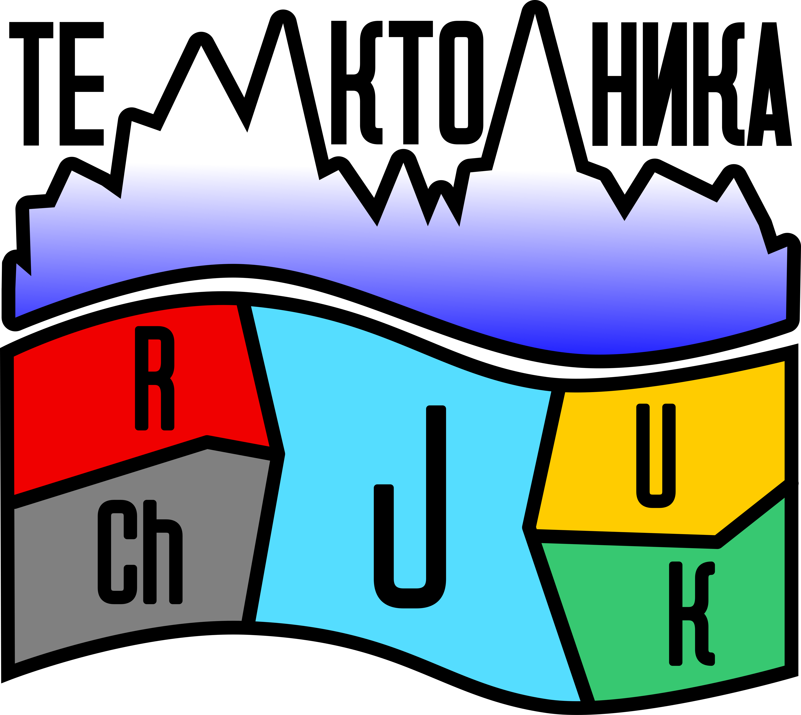

Главная
Услуги
Проекты
О нас
Медиа
Научная деятельность
Карьера
Наши услуги
Геолого-геофизические решения полного цикла — от поиска месторождений до цифровых моделей местности
Геофизические исследования
Поиск и разведка рудных полезных ископаемых
Поиск и разведка подземных вод
Поиск и разведка месторождений строительных материалов
Изучение петрофизических свойств
Аэрофотосъёмка (БПЛА)
Геологические исследования
Геологические маршруты
Сбор и оценка геологических материалов
Отбор проб (штуфных / геохимических)
Консультирование
Обработка и интерпретация данных, сопровождение и запуск полевых работ
Сбор материала, оцифровка и анализ ранее проведённых работ, написание проектов и отчётов
Топография
Лидарная съёмка (LiDAR) с применением БПЛА
Создание цифровой модели местности
Уточнение геодезических планов